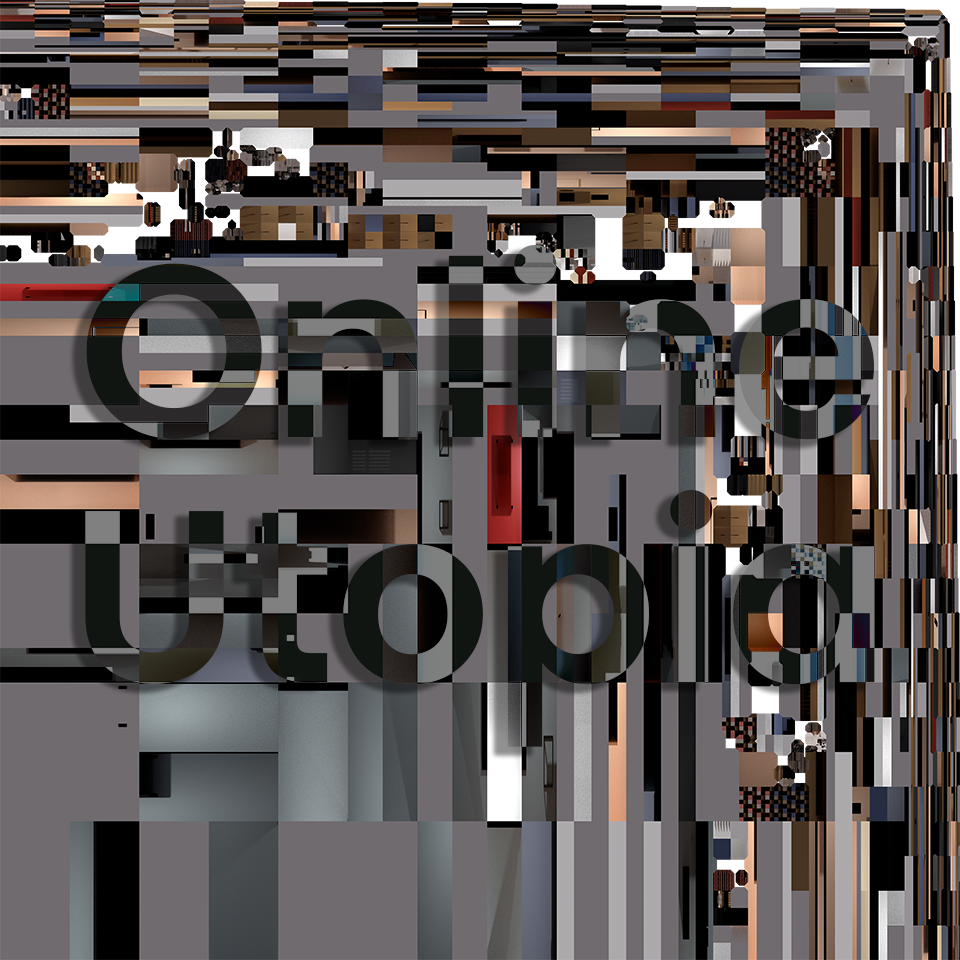
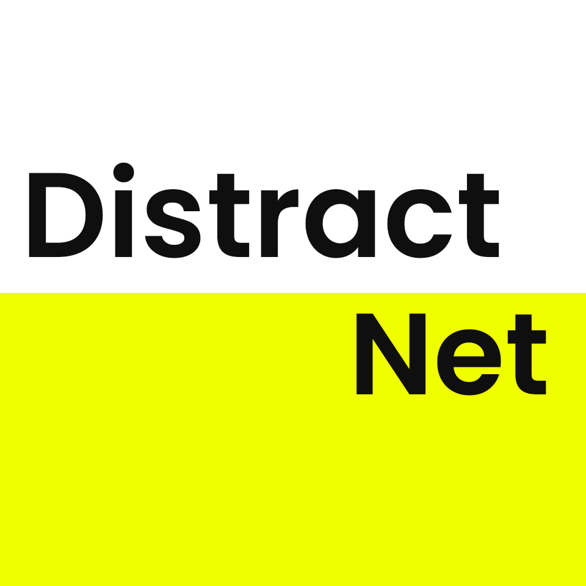
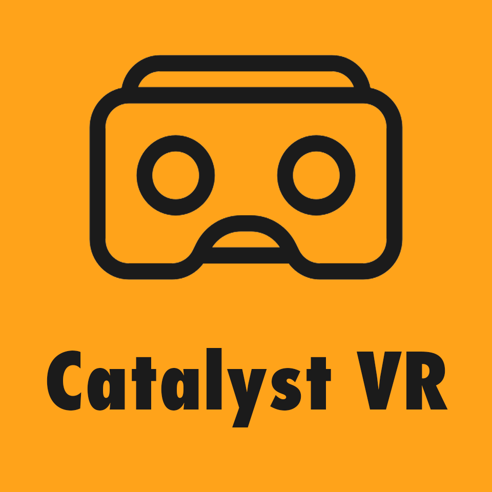

Notify
Augmented Reality Instagram Filter
It's an artwork that highlights the highly addictive social media duser interface design techniques and channeling them into other uses that might save the planet.
Run Artwork
It's an artwork that highlights the highly addictive social media duser interface design techniques and channeling them into other uses that might save the planet.
It's a 3D environment that represents my fantasy-future vision of how different social media platforms would be implemented into our homes, daily lives either using different displays along the place or by augmented reality that would be operated through chipsets implemented into our minds.

DistractNet is an AR Exhibition made for people who were spending most of their lockdown over the internet and got to experience most of the recent lockdown related artworks through the internet as well.
However, DistractNet uses augmented reality also to shed the light on the different sources of distractions on the internet that affects the whole experience of the artworks and it's not controllable the artists.

This artwork illustrates the timeline of evolution for the mainstream communication media which was mainly supported and amplified by an important "underground" factor where the courage for it to be mentioned has not been present, in addition to how this factor is willing to take a huge role in shaping our future media of communication like Virtual Reality and Augmented Reality.
